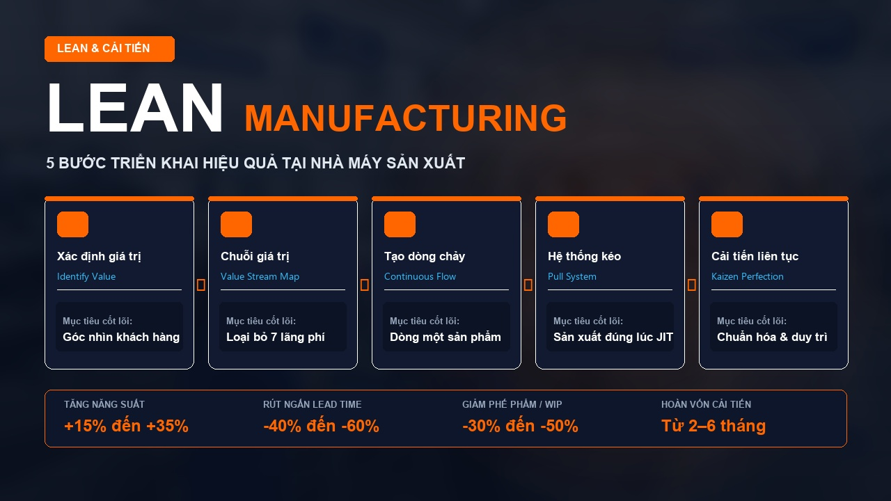

Hiểu về Lean Manufacturing trong 10 phút
Lean không chỉ là loại bỏ lãng phí. Đó là một phương pháp tư duy và tổ chức vận hành giúp nhà máy tạo ra nhiều giá trị hơn với ít nguồn lực hơn.

Một nhà máy bận rộn chưa chắc là một nhà máy hiệu quả
Hãy tưởng tượng một nhà máy với những hình ảnh quen thuộc hằng ngày:
- Công nhân liên tục đi lại để lấy nguyên vật liệu.
- Máy móc chạy hết công suất nhưng bán thành phẩm (WIP) vẫn chất đống.
- Bộ phận sản xuất liên tục tăng ca trong khi đơn hàng vẫn trễ hẹn giao cho khách.
- Nhân viên kiểm tra chất lượng (QC) phải xử lý khối lượng lớn sản phẩm lỗi.
- Quản lý dành phần lớn thời gian trong ngày chỉ để đôn đốc, điều phối và chữa cháy sự cố.
Nhìn bên ngoài, mọi người đều rất bận rộn. Nhưng liệu tất cả những hoạt động đó có thực sự tạo ra giá trị?
Đây chính là câu hỏi đầu tiên của Lean Manufacturing. Mục tiêu không phải là khiến con người làm việc vất vả hơn, mà là thiết kế một hệ thống giúp công việc diễn ra thuận lợi, ít lãng phí và hiệu quả hơn.
01. Lean Manufacturing là gì?
Lean Manufacturing (Sản xuất tinh gọn) là phương pháp quản trị sản xuất tập trung vào việc tạo ra giá trị cho khách hàng bằng cách liên tục loại bỏ lãng phí, cải thiện dòng chảy và nâng cao năng lực của con người cùng hệ thống vận hành.
Lean có nguồn gốc quan trọng từ Hệ thống sản xuất Toyota – Toyota Production System (TPS), sau đó được nghiên cứu, hệ thống hóa và phổ biến rộng rãi trên toàn cầu. TPS được xây dựng trên hai trụ cột cốt lõi:
Chỉ sản xuất và cung cấp những gì cần thiết, với số lượng cần thiết, vào thời điểm cần thiết – loại bỏ tối đa tồn kho trung gian.
Thiết kế quá trình có khả năng tự phát hiện bất thường, dừng chuyền ngăn lỗi tiếp diễn và cho phép con người can thiệp triệt để gốc rễ.
02. Nguyên lý quan trọng nhất: Hiểu đúng về giá trị
Trong Lean, giá trị (Value) được định nghĩa hoàn toàn từ góc nhìn của khách hàng. Khách hàng chỉ sẵn sàng chi trả cho các yếu tố trực tiếp biến đổi sản phẩm đáp ứng mong muốn của họ (chất lượng, tính năng, số lượng, thời gian giao hàng).
Trong bất kỳ nhà máy nào, mọi hoạt động đều thuộc 3 nhóm chính:
| Loại hoạt động | Ví dụ thực tế tại nhà máy | Cách tiếp cận của Lean |
|---|---|---|
| Tạo giá trị (VA) | Gia công cơ khí, hàn, lắp ráp linh kiện, may hoàn thiện, đóng gói sản phẩm hoàn chỉnh | Tối ưu hiệu quả & nâng cao độ chính xác |
| Không tạo giá trị nhưng cần thiết (NNVA) | Kiểm tra chất lượng bắt buộc, ghi chép nhật ký sản xuất, thiết lập máy (setup), chuẩn bị vật tư | Đơn giản hóa & giảm thiểu thời gian thực hiện |
| Lãng phí thuần túy (NVA) | Công nhân đứng chờ máy, đi tìm dụng cụ, chuyển WIP vòng vèo, làm lại phế phẩm | Tìm cách loại bỏ triệt để |
Ví dụ phân tích chu kỳ thao tác 60 giây của một công nhân:
→ Lean không bắt đầu bằng câu hỏi: “Làm thế nào để công nhân gia công nhanh hơn?”, mà bắt đầu bằng câu hỏi: “Làm thế nào để loại bỏ 25 giây lãng phí không tạo giá trị?”.
03. Năm nguyên lý cốt lõi của Lean (Womack & Jones)
Trong tác phẩm kinh điển Lean Thinking, James P. Womack và Daniel T. Jones đã hệ thống hóa tư duy tinh gọn thành 5 nguyên lý nền tảng:
Value – Xác định giá trị
Hiểu thấu đáo khách hàng thực sự cần gì và sẵn sàng trả tiền cho điều gì. Mọi hoạt động không đóng góp vào việc tạo ra giá trị đều phải được xem xét cắt giảm.
Value Stream – Nhận diện dòng giá trị
Lập bản đồ toàn bộ chuỗi mắt xích từ nguyên vật liệu đầu vào, các công đoạn gia công, kiểm tra đến xuất xưởng để nhận diện nơi phát sinh thời gian chờ, ùn tắc và thao tác thừa.
Flow – Tạo dòng chảy liên tục
Thiết kế mặt bằng (Layout) và cân bằng chuyền để bán thành phẩm và thông tin di chuyển nhịp nhàng không bị tắc nghẽn, triệt tiêu việc chất đống giữa các khâu.
Pull – Sản xuất theo cơ chế kéo
Công đoạn trước chỉ sản xuất khi nhận được tín hiệu yêu cầu từ công đoạn sau (theo nhu cầu thực tế của khách hàng), thay vì đẩy hàng loạt khiến kho quá tải.
Perfection – Liên tục hướng tới sự hoàn thiện
Không có hệ thống nào hoàn hảo ngay từ ngày đầu. Doanh nghiệp cần xây dựng văn hóa phát hiện vấn đề, thử nghiệm cải tiến, kiểm chứng và chuẩn hóa không ngừng.
04. Bảy loại lãng phí trong sản xuất (7 Wastes - Muda)
Taiichi Ohno – cha đẻ TPS – đã chỉ ra 7 loại lãng phí phổ biến trong nhà máy (thường viết tắt là TIMWOOD), và trong quản trị hiện đại bổ sung thêm lãng phí thứ 8:
| STT | Loại lãng phí | Biểu hiện thực tế tại sàn sản xuất |
|---|---|---|
| 01 | Overproduction (Sản xuất thừa) | Chạy máy vượt định mức đơn hàng, sản xuất sớm hơn nhu cầu chỉ để giữ máy luôn chạy |
| 02 | Waiting (Chờ đợi) | Công nhân chờ khuôn gá, chờ kiểm tra chất lượng, chờ cấp vật tư hoặc chờ máy sửa xong |
| 03 | Transportation (Vận chuyển thừa) | Xe nâng chạy vòng vèo, chở WIP qua nhiều kho trung gian cách xa nhau do Layout bất hợp lý |
| 04 | Overprocessing (Gia công thừa) | Đánh bóng kỹ hơn mức khách hàng cần, đóng gói nhiều lớp dư thừa hoặc dùng dung sai quá mức cần thiết |
| 05 | Inventory (Tồn kho thừa) | Nguyên liệu, bán thành phẩm và thành phẩm ứ đọng che giấu các vấn đề chất lượng và giam vốn |
| 06 | Motion (Thao tác thừa) | Công nhân phải cúi lưng, với tay lên cao, đi lại nhiều bước chỉ để nhặt một con ốc hoặc dụng cụ |
| 07 | Defects (Sai lỗi & Phế phẩm) | Sản phẩm lỗi phải làm lại (rework), tiêu hao vật tư, giảm tỷ lệ giao hàng đúng hạn |
| 08 | Non-utilized Talent (Lãng phí trí tuệ) | Không lắng nghe, không tạo cơ chế để công nhân trực tiếp hiện trường đề xuất và tham gia Kaizen |
05. Những công cụ Lean phổ biến
Lean là một hệ thống tư duy quản trị; các công cụ là phương tiện kỹ thuật để hiện thực hóa tư duy đó. Dưới đây là những công cụ thường được áp dụng trong nhà máy:
| Công cụ Lean | Mục đích triển khai chính |
|---|---|
| 5S | Sàng lọc, Sắp xếp, Sạch sẽ, Săn sóc, Sẵn sàng – xây dựng nơi làm việc trực quan, chuẩn mực |
| Kaizen | Văn hóa cải tiến liên tục từ những hành động nhỏ hàng ngày có kiểm chứng số liệu |
| VSM (Value Stream Mapping) | Bản đồ chuỗi giá trị – công cụ chẩn đoán trực quan toàn bộ dòng thông tin và dòng vật chất |
| Standard Work | Công việc tiêu chuẩn – chuẩn hóa thao tác tốt nhất hiện tại để đảm bảo an toàn, chất lượng và năng suất |
| Kanban | Thẻ lệnh điều phối sản xuất và cấp phát vật tư trực quan theo cơ chế kéo (Pull) |
| SMED (Quick Changeover) | Kỹ thuật rút ngắn thời gian chuyển đổi mã hàng / thay khuôn dưới 10 phút để sản xuất lô nhỏ linh hoạt |
| Poka-Yoke | Cơ cấu chống sai lỗi tự động – thiết kế gá đặt để thao tác sai không thể lắp vừa hoặc báo động ngay |
| TPM (Bảo trì năng suất toàn diện) | Nâng cao độ tin cậy thiết bị, giảm thời gian dừng máy đột xuất thông qua bảo trì tự quản (Autonomous Maintenance) |
| A3 / 5 Why | Phương pháp tư duy logic và công cụ phân tích giải quyết vấn đề tận gốc rễ trên một trang giấy A3 |
06. Một ví dụ minh họa: Cách Lean giải bài toán thực tế
Xét một chuyền sản xuất cơ khí 4 công đoạn: Gia công → Hoàn thiện → Kiểm tra → Đóng gói.
- Bán thành phẩm chất đống nghẽn tại khâu Hoàn thiện.
- Công nhân đóng gói thường xuyên rơi vào cảnh “lúc ngồi chờ rảnh rỗi, lúc chạy đôn chạy đáo làm thêm giờ”.
- Công nhân phải di chuyển 40 mét qua kho đệm để lấy hàng.
Cách tư duy truyền thống
Yêu cầu bộ phận Gia công chạy tối đa sản lượng để đạt KPI số lượng, bổ sung thêm 2 công nhân đóng gói để chạy bù khi hàng dồn về. Kết quả: Chi phí tăng, WIP càng phình to, nhưng đơn hàng vẫn giao trễ.
Cách tư duy Lean
Tập trung vào Dòng chảy (Flow): Đo chu kỳ từng công đoạn (Cycle Time) so với nhịp Takt Time. Điều chỉnh mặt bằng chữ U, cân bằng năng lực hoàn thiện, quy định giới hạn tồn kho trung gian (WIP cap). Toàn bộ hệ thống vận hành nhịp nhàng với ít nhân lực hơn.
07. Lean mang lại những lợi ích gì cho nhà máy?
Khi được triển khai bài bản và duy trì đúng cách, Lean tạo ra tác động đồng bộ trên 6 khía cạnh vận hành:
Giảm thời gian chờ, loại bỏ thao tác thừa, nâng cao sản lượng trên từng giờ công lao động.
Kiểm soát sai lỗi tại nguồn, chuẩn hóa quy trình giúp giảm tỷ lệ phế phẩm và làm lại.
Cắt giảm tồn kho dư thừa, giảm chi phí lưu kho, tiết kiệm tiêu hao vật tư và mặt bằng.
Rút ngắn Lead Time tổng thể, phản ứng nhanh nhạy với biến động đơn hàng của khách.
Môi trường sản xuất ngăn nắp, giảm căng thẳng thể chất cho công nhân, hạn chế tai nạn.
Xây dựng đội ngũ biết tư duy logic, tự phát hiện bất thường và chủ động giải quyết sự cố.
08. Ba hiểu nhầm phổ biến về Lean
Hiểu nhầm 1: “Lean chính là làm 5S”
5S là nền móng giúp dọn dẹp và trực quan hóa hiện trường. Nhưng một nhà máy sạch bóng 5S vẫn có thể chịu tồn kho khổng lồ, chi phí cao và giao hàng trễ nếu dòng chảy không được thiết kế chuẩn mực. 5S là công cụ khởi đầu, Lean là hệ thống điều hành toàn diện.
Hiểu nhầm 2: “Lean là việc của riêng phòng Kaizen / Cải tiến”
Nếu Lean chỉ được coi là nhiệm vụ của vài kỹ sư Kaizen trong khi quản lý sản xuất và công nhân vận hành đứng ngoài cuộc, các dự án sẽ nhanh chóng “chết non” khi chuyên gia rút đi. Lean chỉ thành công khi trở thành thói quen quản trị hàng ngày của chính đội ngũ hiện trường.
Hiểu nhầm 3: “Lean là dự án làm một lần là xong”
Thị trường, đơn hàng, công nghệ và con người luôn thay đổi. Không có trạng thái hoàn hảo vĩnh cửu. Lean là năng lực cốt lõi giúp tổ chức học hỏi và liên tục tiến hóa mỗi ngày.
09. Muốn bắt đầu Lean, hãy trả lời 4 câu hỏi này
Doanh nghiệp chưa từng làm Lean không cần phải bắt đầu bằng một đề án đồ sộ tốn kém. Hãy chọn 1 chuyền hoặc 1 điểm nghẽn nghiêm trọng nhất và trả lời thẳng thắn:
Khách hàng thực sự cần giá trị gì?
Chất lượng, tiến độ giao hàng, hay giá cả đang là yếu tố sống còn được ưu tiên nhất?
Nhà máy đang lãng phí nguồn lực ở đâu?
Thời gian chờ, thao tác dư thừa, phế phẩm hay tồn kho WIP đang ngốn nhiều tiền nhất?
Nguyên nhân gốc rễ giới hạn kết quả là gì?
Vấn đề nằm ở thiết bị, con người, quy trình làm việc hay cơ chế giao kế hoạch?
Làm thế nào để chuẩn hóa và duy trì?
Thay đổi gì, đo bằng chỉ số nào và ai chịu trách nhiệm giám sát duy trì hàng ngày?
10. Bản chất cuối cùng của Lean: Xây dựng một hệ thống vận hành tốt hơn
Lean không được đo bằng số bảng biểu 5S hay số khẩu hiệu dán trên tường. Một nhà máy thực hành Lean thành công là nơi:
- Công việc và thông tin được tổ chức minh bạch, thuận lợi cho người trực tiếp thao tác.
- Bất thường phát sinh được phát hiện và xử lý kịp thời ngay tại nguồn.
- Đội ngũ nhân sự hiểu rõ tiêu chuẩn và có năng lực chủ động cải tiến công việc.
- Nguồn lực máy móc, vật tư được cấp phát nhịp nhàng theo đúng nhu cầu.
- Kết quả cải tiến được chuẩn hóa vào hệ thống quản trị, không bị tụt lùi theo thời gian.
Lean không làm cho nhà máy hoàn toàn biến mất sự cố. Lean trang bị cho nhà máy năng lực phát hiện, giải quyết và ngăn ngừa vấn đề tốt hơn mỗi ngày.
Kết luận: 5 điều cốt lõi cần nhớ sau 10 phút đọc
- Lean bắt đầu từ giá trị của khách hàng, tuyệt đối không bắt đầu từ việc chạy theo công cụ.
- Lãng phí là mọi hoạt động tiêu tốn nguồn lực nhưng không tạo ra giá trị gia tăng mà khách hàng cần.
- Hiệu quả của toàn bộ dòng chảy luôn quan trọng hơn hiệu suất riêng lẻ của từng chiếc máy hay từng công đoạn.
- Con người và năng lực giải quyết vấn đề tại hiện trường là linh hồn của cải tiến liên tục (Kaizen).
- Lean chỉ thực sự bền vững khi trở thành một phần của hệ thống quản trị và thói quen vận hành hằng ngày.